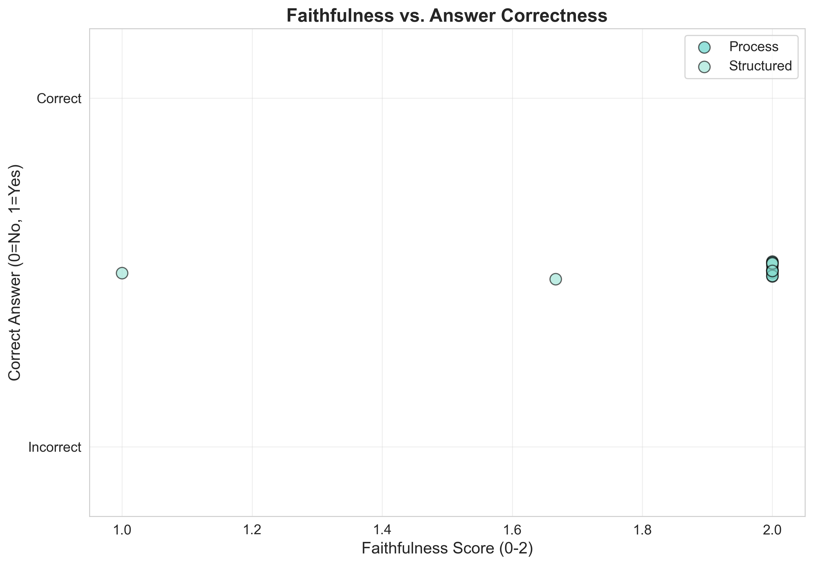

How We Measure Reliability
Final Answer Accuracy
Compare extracted final answers against GSM8K ground truth (normalized for formatting).
Error & Failure Modes
Tag incorrect cases by error type (arithmetic, conceptual, reading, incomplete reasoning, parsing).
Reasoning Quality Checks
Screen process/structured traces for hallucinations, inconsistencies, and unverifiable steps.
Goal: Separate “right answer” from “reliable reasoning,” especially for audit and compliance contexts.

How We Measure Interpretability

Step Correctness (0–2)
Are intermediate steps mathematically valid and justified?
Faithfulness (0–2)
Do the steps align with an expert solution path (not just the final answer)?
Auditability (1–5)
Clarity, verification effort, and coherence—how easy is it for a human to check?
Goal: Produce explanations that are useful for oversight (and avoid the “illusion of explainability”).
Analysis Plan

What we analyze
- Across conditions: accuracy, error types, and reasoning-quality labels.
- Within process traces: step correctness ↔ faithfulness ↔ auditability relationships.
- Significance: paired tests where applicable; confidence intervals for key comparisons.
- Outputs: plots/tables that support transparent reporting and traceable auditing.
